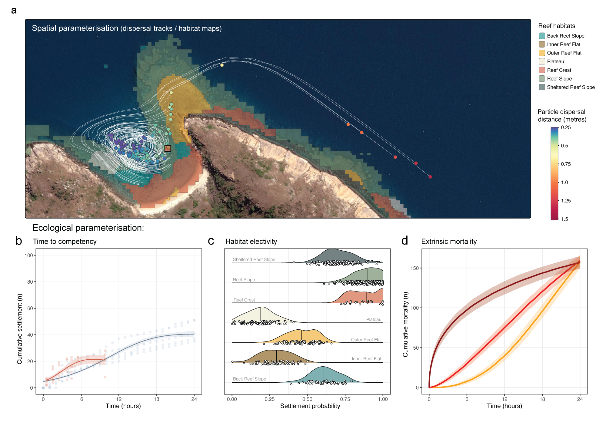
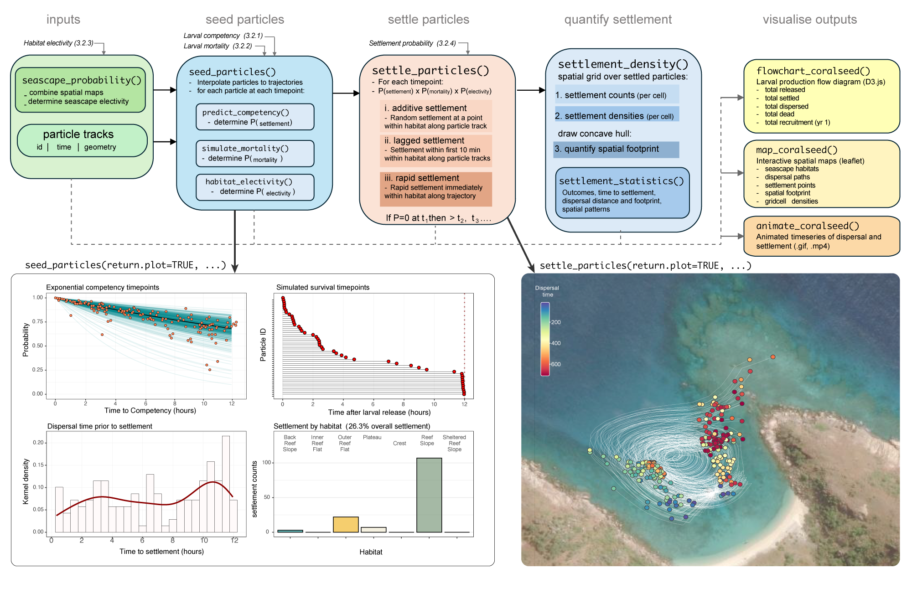
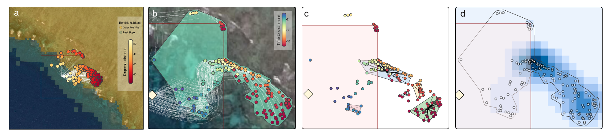
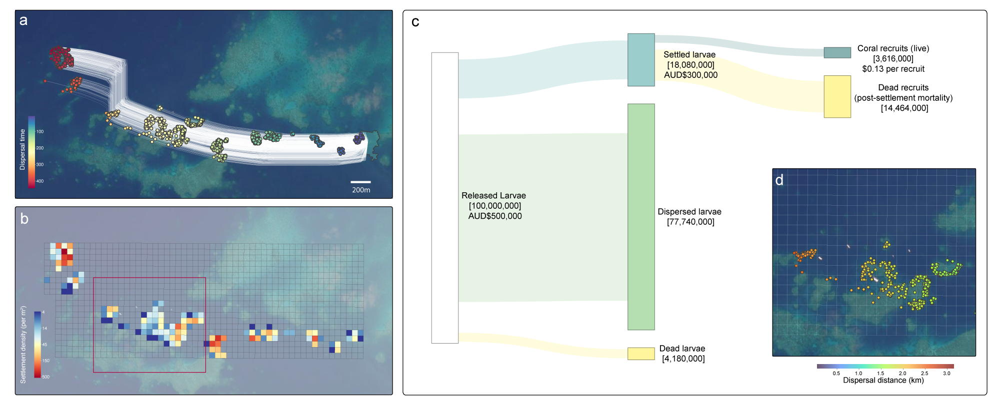

coralseed [v1.1.0]: a spatially explicit probabilistic model of larval seeding for large scale restoration
Source: vignettes/manuscript.qmd
G. Roff1,2, M. Gouezo1,2, L. Hardiman1, G. Carlin1, D.T. Thomson1, P. Harrison2, C. Doropoulos1
1 CSIRO Environment, St Lucia, Queensland, Australia
2 Faculty of Science and Engineering, Southern Cross University, Military Road, East Lismore, 2480, NSW, Australia
Correspondence to: George Roff (george.roff@csiro.au)
Abstract
coralseed is a spatially explicit probabilistic model that aims to quantify the spatial footprint of propagule reseeding for restoration projects. The model is based on input from high-resolution hydrodynamic models that track individual particles through space and time. By including key parameters for larval biology traits including developmental rates, habitat specific substrate settlement preferences, and swimming behaviour, individual-based probability of larval settlement – the transition of planktonic, motile larvae to attached and metamorphosed polyps on the reef substrata – can be modelled for 105 - 107 larvae. Individual-based settlement probability of dispersal paths are then overlaid onto high-resolution habitat maps to form a spatially-explicit model of settlement following release of coral larvae. coralseed aims to provide insight into key knowledge gaps in larval restoration and insights into large-scale larval dispersal and settlement processes. By varying initial model parameters (e.g. tidal currents, time of release, larval development, larval densities, location of release sites), a simulation modelling approach can be used to quantify the likely spatial footprint of propagule releases and expected settlement densities. Ultimately, the coralseed platform allows for optimisation and upscaling of larval reseeding programs on the Great Barrier Reef and elsewhere, aiding managers and planners in the spatial prioritisation of restoration operations to achieve the best possible outcomes. The platform can also be applied to other key coastal marine organisms such as oyster reefs, mangrove forests, and seagrass meadows. coralseed is available as an R package via remotes::install_github(“marine-ecologist/coralseed”).
1. Introduction
Coastal ecosystems, including seagrasses, saltmarshes, and mangroves, provide essential services such as shoreline stabilization, carbon sequestration, and biodiversity support (Duarte et al., 2013). However, these habitats face increasing degradation due to anthropogenic pressures, climate change, and habitat fragmentation (Waycott et al., 2009). As a result, restoration projects focusing on propagule reseeding have gained prominence as scalable approaches to restore ecosystem function and biodiversity (Vanderklift et al. 2020). Large-scale reseeding programs, particularly for vegetated coastal systems, have demonstrated success in restoring habitat continuity and ecosystem resilience (van Katwijk et al., 2016). While these approaches show promise in scaling restoration efforts, a key challenge in optimizing such approaches is predicting where propagules disperse and settle following their release. Understanding patterns of dispersal and the subsequent spatial footprint of reseeding restoration efforts is critical for evaluating cost-benefit trade-offs with other restoration techniques, improving strategic planning, and scaling up operations effectively (Lowe et al., 2015). In terrestrial systems, probabilistic modelling approaches are increasingly employed to quantify dispersal patterns and their interaction with environmental conditions (e.g, van Vizentin-Bugon et al 2022, Ditmer et al 2023), enabling improved decision-making frameworks.
In coastal ecosystems, restoration of vegetated coastal ecosystems such as seagrasses and mangroves often involves passive propagules, whose dispersal patterns are easier to predict (Orth et al., 2006). In contrast, restoring of invertebrate habitats such as tropical coral reefs and temperate oyster reefs through larval reseeding presents additional challenges due to the complexity of substrates and larval behaviour in selecting habitats (e.g., Babcock & Mundy 1996, Raimondi & Morse 2000). Fine-scale hydrodynamics, including tidal currents, eddies, and vertical stratification, influence larval dispersal in three-dimensional space (Cowen et al., 2000), while larval swimming behaviour that actively interacts with water column structure makes dispersal predictions complex (Leis, 2007). Further complicating predictions of larval dispersal is understanding competency rates—the time it takes to and during which larvae are capable of settlement—which influences their dispersal window, affecting the distance and likelihood of reaching suitable habitats (Graham et al. 2008, Connolly & Baird 2010). Even when larvae are competent, substrate electivity or preferences for specific settlement surfaces may prevent successful settlement (e.g., Harrington et al. 2004, Abdul Wahab et al 2023, Randall et al 2025), emphasizing the need for detailed habitat data, hydrodynamic models, and larval behavioural parameterisation to improve predictions.
In part due to such complexities, modelling tools that are effective at the finer spatial scales of applied restoration operations (100s of metres to hectares; Bayraktarov et al. 2016) remain scarce, limiting the ability predict the broader spatial footprint and outcomes of larval reseeding efforts (but see Gouezo et al. 2025 for recent advancements). Access to such tools would substantially improve resource managers capacity to decide upon site selection and optimise approaches and facilitate evidence-based restoration plans and assessments of long-term ecological benefits. To address these challenges, we developed ‘coralseed’, a spatially explicit probabilistic model designed to simulate larval dispersal and settlement patterns following propagule releases. By incorporating high-resolution oceanographic data, biological traits, and habitat preferences, coralseed significantly improves spatial prediction of restoration outcomes, facilitating dynamic decision making for conservation science.
2. Overview of the coralseed v1.1.0 model
‘coralseed’ v1.1.0 is a spatially explicit probabilistic model that aims to quantify the effect size and spatial footprint of larval reseeding from restoration projects. The model is based on input from high-resolution hydrodynamic models that track individual particles through space and time (e.g. Bruyère et al 2023, Grech et al 2016, Ani et al 2024, Gouezo et al 2025). By parameterising larval biology traits including competency rates, habitat specific substrate settlement preferences, and swimming behaviour, individual-based probability of settlement can be modelled for 105 - 107 larvae. Individual-based settlement probability of dispersal paths are then overlaid onto high-resolution habitat maps to form a spatially-explicit model of settlement patterns and densities following the release of coral larvae. 2.1 coralseed modelling workflow
‘coralseed’ differs from existing modelling approaches of coral reefs in three key ways: 1) by adopting an individual-based approach, the model allows for tracking of individual larvae within cohorts through space and time, 2) by tracking each larvae in cartesian space, the model allows for spatially explicit patterns of dispersal, settlement, and growth across coral reef seascapes, and 3) by allowing for flexibility in input particle tracking simulated data file format and parameterisation of functions, the model facilitates parameterisations of ecological processes (e.g. settlement, mortality, growth, electivity) and allows for use across a almost any dispersal simulation. Coupled with high-resolution hydrodynamic models that are constantly being tested and refined in the field (e.g. Gouezo et al 2025, Mason et al. 2025) allows for high-resolution dispersal predictions at the scale of metres to 100s of metres.
2.2 Spatially explicit model-based approach
‘coralseed’ is based upon the premise of larval reseeding, where larvae are released onto coral reefs to “seed” adjacent substrates with juvenile corals, with the ultimate outcome of boosting densities of adult corals and/or increasing coral cover (Doropoulos et al 2019). The ‘coralseed’ workflow seeks to model this process by: 1) seeding larvae across particle tracks to quantify spatiotemporal trajectories of individuals (i.e., where are the larvae dispersing once released?), 2) predicting larval competency (time-to-settlement) along each particle track (i.e., when are larvae ready to settle after release?), 3) predicting trajectories of larvae during dispersal (i.e., are they passing across coral reef habitats?), 4) predicting the probability of settlement within habitats (i.e., will larvae elect to settle if they do pass a coral habitat?), 5) quantify the combined effects of competency and electivity on the probability of larval settlement (i.e., if the larvae are competent to settle, do they encounter a habitat and elect to settle?), and 6) what are the spatial patterns of dispersal and settlement (e.g. how far do larvae travel after release, and are there settlement ‘hotspots’ close to the point of release?). By varying initial model parameters (e.g., tidal currents, time of release, location of release sites, larval competency rates, larval densities), a simulation modelling approach can be used to quantify the likely spatial footprint and expected settlement densities, allowing for optimisation and upscaling of larval reseeding programs on the Great Barrier Reef and elsewhere.
2.3 coralseed R package
‘coralseed’ is available as an R ‘package’ (http://github.com/marine-ecologist/coralseed/). The package relies on the ‘sf’ package for spatial vector data processing, ‘brms’ package for Bayesian probabilistic modelling of ecological parameters, and the ‘tmap’ package for visualising data outputs.
3. Overview of the coralseed model
‘coralseed’ v1.1.0 is a spatially explicit probabilistic model that aims to quantify the spatial footprint of larval reseeding from restoration projects.
3.1 coralseed background
coralseed is based upon the premise of larval reseeding, where larvae are released into the water column onto coral reefs to “seed” adjacent substrates with juvenile corals, with the ultimate outcome of boosting densities of adult corals and/or increasing coral cover (Doropoulos et al 2019). The model: 1) seeds larvae through particle tracks (i.e., where are the larvae dispersing once released?), 2) predicts larval competency (time-to-settlement) of larvae within each particle track (i.e. when are they ready to settle after being released?), 3) which habitats do the larvae cross when being dispersed (i.e. are they passing across coral reef habitats?), 4) what is the settlement potential within each of these habitats (i.e. will larvae elect to settle if they do pass?) 5) what is the combined probability of larval settlement (i.e. if the larvae are competent to settle, encounter a habitat, elect to settle), and 6) of all released larvae, what are the spatial patterns (e.g. how far to larvae travel after release? are there settlement ‘hotspots’?). By varying initial model parameters (e.g. tidal currents, time of release, location of release sites, larval competency rates, larval densities), a simulation modelling approach can be used to quantify the likely spatial footprint and expected settlement densities, allowing for optimisation and upscaling of larval reseeding programs on the Great Barrier Reef and elsewhere.
3.2 Spatially explicit modelling
To date, most region and local scale dispersal studies consider a particle to be ‘settled’ when they are competent and intersect with a reef habitat (e.g. Hock et al. 2017, Figueiredo et al. 2022, Ani et al 2024, Cresswell et al 2024). These studies assume that: all reef habitats are equal in term of settlement success, and that parameterised competency rates as discrete 24hr periods (Hock et al. 2017, Figueiredo et al. 2022) rather than modelling competency as a continuous process (but see Ani et al 2024 and Cresswell et al 2024 for finer-scale modelling of competency). While recent advances in metacommunity modelling allow for improved predictions of settlement across seascapes, model outputs quantify settlement at a site level (i.e. ~0.3km to 1km), none of the existing modelling approaches allow for tracking of individual larvae or juvenile corals through space and time (i.e. 4D modelling with cartesian coordinates [xyz] and a time trajectory).
`coralseed’ aims to improve on existing modelling approaches accurately predict spatial settlement patterns. The model approach 1) allows for spatially explicit tracking of larvae through time by modelling individual larvae along unique high-resolution particle tracks, 2) incorporates a high-resolution timeseries at 1-min intervals, allowing for fine-scale temporal modelling of competency and mortality along larval trajectories, 3) improves spatially explicit settlement patterns by incorporating habitat specific electivity at seascape scales, and 4) enables spatially explicit quantification of restoration outcomes by modelling total outputs (i.e. settled corals) from of an initial pool of seeded larvae.
`coralseed’ is also highly flexible in terms of dispersal models, including regional-scale modelling (e.g., ~200 m resolution OceanParcels particle tracks, Ani et al 2024) and high-resolution local-scale modelling (e.g. 30 m resolution CONNIE particle tracks, Gouezo et al 2025).
3.3 coralseed v1.1.0 R package
coralseed is a series of functions combined as an R ‘package’ and is available via https://github.com/marine-ecologist/coralseed. coralseed uses the sf and stars packages (Pebesma & Bivand 2023) for vector and raster data, tmap (Tennekes 2018), leaflet (Cheng et al 2024), and networkD3 (Allaire et al 2017) for data visualisation, and brms (Bürkner 2018) for Bayesian modelling of input parameters.
4. coralseed parameterisation

To parameterise the coralseed model, we used a range of published datasets, hydrodynamic models, and new experimental results from larval settlement assays. Where possible, coralseed has been written to be flexible in parameterisation, allowing the incorporation of different or new datasets, or different model fits to existing data to account for varying ecological functions (e.g., flexibility between the exponential, logarithmic, and Weibull functions when fitting models to settlement data).
4.1 Spatial parameters
Spatial parameterisation is critical in restoration models, particularly in accurately predicting pathways of larval dispersal, settlement, and determining the overall spatial footprint of restoration outcomes. Spatial parameterisation in coralseed v1.1.0 is individual-based, and functions by tracking larvae along dispersal paths and identifying whether trajectories intersect with suitable habitat for settlement.
4.1.1 Dispersal paths
The coralseed model employs detailed spatial tracking of individual coral larvae from their release point to potential settlement sites. It accepts dispersal path data as XY coordinates provided in the simple features (sf) POINT geometry format (see Table 1 for example). This approach allows each larva to be uniquely tracked using an ‘id’, with spatial positions (‘geometry’) captured at discrete temporal intervals (‘time’). Input data flexibility is a significant advantage of coralseed, as strict regular intervals in the input files are not mandatory. Instead, coralseed internally interpolates larval trajectories into consistent timesteps—commonly set at resolutions of either 1 or 5 minutes—ensuring robust and comparable outcomes across diverse input dispersal models. This flexibility accommodates variability in data availability and observational frequency, making coralseed suitable for integration with various dispersal modelling frameworks (Figure 1a).
| id | time | geometry |
|----|--------------------|-----------------------------|
| 0 | 16/12/2022 14:06 | POINT (1630092 8352332) |
| 0 | 16/12/2022 14:17 | POINT (1630036 8352300) |
| 0 | 16/12/2022 14:29 | POINT (1629975 8352271) |
| 0 | 16/12/2022 14:41 | POINT (1629906 8352243) |
| 0 | 16/12/2022 14:53 | POINT (1629821 8352205) |
| 0 | 16/12/2022 15:05 | POINT (1629739 8352121) |
| 0 | 16/12/2022 15:17 | POINT (1629697 8352018) |
| 0 | 16/12/2022 15:29 | POINT (1629665 8351921) |
| 0 | 16/12/2022 15:41 | POINT (1629646 8351828) |
| 0 | 16/12/2022 15:53 | POINT (1629634 8351736) |Bounding box: xmin: 1629602 ymin: 8350374 xmax: 1630097 ymax: 8352354
Geometry type: POINT | Projected CRS: AGD84 / AMG zone 53
coralseed has been validated against various particle tracking simulated data, such as from CONNIE (CONNectivity InterfacE; Gouezo et al., 2025) and oceanparcels (Ani et al., 2024), both simulated within the Great Barrier Reef. Given the current constraints in handling zarr data format (large N-dimensional typed arrays) within R, coralseed provides dedicated R functions specifically designed to facilitate direct conversions of oceanparcels outputs into sf-compatible formats, ensuring accessibility and usability across marine restoration projects.
4.1.2 Seascape maps
Predicting spatial patterns of coral larval settlement requires accurate mapping of benthic habitats to determine suitable settlement locations. To predict spatial patterns of larval settlement, coralseed tracks particle paths across benthic substrates to determine the probability of settlement based on habitat electivity (Figure 1c). The default habitat maps employed by coralseed originate from the high-resolution Allen Coral Atlas (Lyons et al., 2024). However, the model’s design allows for integration with other vector-based habitat maps (e.g., Andréfouët & Bionaz, 2021), granting restoration practitioners the flexibility to apply region-specific or updated habitat information that may improve settlement predictions.
In coralseed v1.1.0, the suitability of substrates for coral settlement was assessed using a two-step procedure:
Exclusion of Non-Colonisable Substrates: This step systematically removed substrates known to be unsuitable for coral larval settlement, including microalgal mats, seagrass beds, sandy areas, coral/algae-dominated regions, and rubble.
Stratification Colonisable Substrates: The remaining substrates were classified according to geomorphic habitat categories provided by the Allen Coral Atlas, allowing for spatially explicit predictions of settlement outcomes based on habitat type. Both shallow lagoon and deep lagoon habitats were explicitly excluded due to their high-sediment loading and suboptimal habitats for coral larval settlement. The following geomorphic categories were included:
Back Reef Slope • Sheltered Reef Slope • Plateau • Inner Reef Flat • Outer Reef Flat • Reef Slope • Reef Crest
4.2 Ecological parameters
4.2.1 Larval competency
The larval phase of corals and other benthic invertebrates (e.g., echinoderms, gastropods; Hadfield et al. 2015) consists of a pre-competent phase, where development is still underway and larvae are not yet competent to settle, and a competent phase, where larvae are capable of settlement if suitable substrates are present (e.g., Connolly & Baird 2010, Randall et al. 2024). For modelling larval reseeding potential, understanding short-term (hourly) patterns of larval competency is critical. If larvae settle immediately following larval release (<1-2 hours), the spatial footprint of restoration efforts will be small scale (<100 m) and concentrated (high densities of settlers). If larval competency peaks 6-12 hours after release, the spatial footprint will be larger scale (>1 km) and diffuse. Understanding such fine-scale patterns of larval competency allows for more complex larval deliveries such as leveraging slack current conditions to increase larval settlement densities over reduced dispersal footprints following larval reseeding efforts.
In larval reseeding programs, larvae are cultured in aquaculture facilities on land (e.g., Edwards et al. 2015, Pollock et al. 2017, dela Cruz & Harrison 2017, Severati et al. 2024) or at sea (e.g., Heyward et al. 2002, Omori et al. 2007, Doropoulos et al. 2019) and held until they reach optimal competency. Optimal competency is typically determined by i) adding n larvae to an inducer and quantifying the proportion settled after 10-24 hours, or ii) adding settlement substrata to larval cultures and quantifying the proportion of larvae that settle after 24-hours. Competency assays are repeated daily and larvae are then released onto the target reef area at peak competency, which is typically targeted to be >50% of the cohort, to maximise the impact of larval reseeding. The metric “competency” has been defined experimentally in different ways. Typically, subsets of larvae from cultures are counted and added to conditioned tiles / crustose coralline algae fragments and assayed 24-hours later (e.g., Heyward & Negri 1999, Connolly & Baird 2010), with the proportion of settled/metamorphosed, swimming and “dead” larvae recorded. As coral larvae undergo a peak in competency in the days after fertilisation, these assays are critical in understanding settlement dynamics and are used in estimating dispersal potential (e.g., Connolly & Baird 2010) and parameterise large-scale ecosystem models that include larval connectivity estimates (e.g., Condie et al 2021, Gouezo et al. 2021, Bozec et al. 2022)
coralseed defines competency as the duration of time from larval release to settlement (from the perspective of larvae at n days old following fertilisation) to align with the propagule reseeding approach that is utilised in restoration operations. This definition differs from traditional studies of larval competency (e.g. Heyward & Negri 1999, Connolly & Baird 2010) and that derive larval competency as the proportion of n larvae settling in a 24-hour period across multiple days. The distinction is important, as coralseed models competency as continuous individual-based measures within a single cohort using hourly measurements, while traditional studies (and dispersal models, e.g. Ani et al 2024) define discrete (daily) timesteps across multiple cohorts.
To parameterise coralseed, we conducted two separate competency assays: 1) using a single-species (Acropora tenuis) laboratory-reared culture at SeaSim (Australian Institute of Marine Science, Townsville) in November 2022, and 2) using multi-species larvae harvested from wild slicks collected from the northern Great Barrier Reef at Lizard Island in December 2022. The experiments tracked settlement of replicated cohorts of larvae (n=100 per replicate) at hourly timepoints (either 0 to 24-hours at SeaSims or 0 to 12-hours with wild spawn). Five replicate pre-conditioned settlement tiles were placed in individual 1-litre flow-through aquaria to simulate natural conditions, and 100 larvae released in each container at t0, beginning at 3.5 days following spawning at SeaSims and 4.5 days following spawning at Lizard Island. Tiles were imaged hourly following larval release using a high-resolution camera (Sony a7R IV) and in-water probe lens (Laowa 24mm) between t0-6 hours and again at ~t10 hours. The proportion of larvae able to settle through time was quantified by tracking individual attachment and subsequent metamorphosis of larvae on tiles at each time point. Results from both wild and lab cultured larvae were similar in that initial settlement occurred within the first 1-2 hours (10% and 6% at 2hrs respectively) and slowed at around 6-10 hours after release (16% and 20% respectively, Figure 1b). Settlement at 10 hours averaged 10 - 30% of total larvae, and settlement continued in both experiments without reaching a clear asymptote by either end point. Predictions for time-to-settlement for parameterising dispersal models (105 - 106 larvae) were obtained from draws from the posterior of the brms model outputs.
4.2.2 Larval mortality
coralseed incorporates an additional parameter for extrinsic mortality in early dispersal/settlement stages that accounts for exogenous sources of mortality otherwise unaccounted for in larval development such as planktivory (Fabricius et al 2004) or entanglement/entrapment in algal turfs (Birrell et al 2005). This parameter is independent to intrinsic mortality (i.e. genetic deformities, fertilisation defects) which is inherent in the parameterisation of time-to-competency curves based on experimental data (see 3.2.1). Given the complexities of the magnitude or shape of this distribution, extrinsic mortality in coralseed v1.1.0 is parameterised to approximate classic survival curves (i.e., Type I, Type II, Type III survival, sensu Odum 1953):
• Type I survivorship: high age-specific survival probability in early and middle dispersal, followed by an increasing mortality and rapid decline in survival in late-stage dispersal. • Type II survivorship: constant mortality through time with a fixed probability of survival • Type III survivorship: high mortality in early stages with low rates of mortality and high probability of survival in late-stage dispersal, most typical of marine invertebrate larvae.
4.2.3 Habitat electivity
The selection of habitats by coral larvae for settlement is key in determining growth and survival into the adult life-history stage (Price 2010). In laboratory experiments, coral larvae respond to specific biotic settlement cues from substrates dominated by early successional crustose coralline algae (Harrington et al. 2004, Abdul Wahab et al 2023) and microbial biofilms associated with optimal shallow-water settlement habitats (Webster 2004), while avoiding habitats with negative outcomes such long-turf algae, sponges, and ascidians (Wakwella et al 2020). These patterns are consistent with large-scale field assessments of coral settlement, with a general pattern of higher coral settlement rates in forereef and reef slope areas compared to backreef and reef flat locations (Baird & Hughes 1997, Arnold et al 2010, Doropoulos et al. 2015). coralseed v0.1.1 uses data from settlement tiles from Lizard Island (Baird and Hughes 1998, Baird 2001) and other publications from the Great Barrier Reef (Harriot 1985, Mundy & Babcock 1998, Baird 2001, Baird et al 2003, Doropoulos et al 2015) to parameterise settlement probability across different habitat types derived from the Allen Coral atlas spatial maps (section 3.1.2) where P=1 is absolute settlement and P=0 is no settlement:
- “Reef Crest” - high settlement probability (P = 0.9 ± 0.1)
- “Reef Slope” - high settlement probability (P = 0.9 ± 0.1)
- “Sheltered Reef Slope” - lower than exposed habitats (P = 0.7 ± 0.1)
- “Back Reef Slope” - lower in sheltered slope habitats (P = 0.6 ± 0.1)
- “Outer Reef Flat” - half the settlement of reef crest/slope (P = 0.45 ± 0.1)
- “Inner Reef Flat” - senescent habitat, low settlement potential (P = 0.3 ± 0.1)
- “Plateau” - deep (>10m) habitat, low probability of settlement (P = 0.2 ± 0.1)
Habitat-specific settlement probabilities are then used to parameterise spatial maps by sampling from a normal distribution of the mean (± standard error) probability (Figure 1C).
4.2.4 Settlement probability
To determine settlement, the coralseed model takes the individual particle paths and maps settlement probability for each id according to habitats encountered along each trajectory. Note that this is not the probability of settlement but the probability of settlement if the larvae are competent (see 4.1.4 for further details). There are two caveats for determining larval settlement as currently implemented in coralseed:
Larval “attraction”:
coralseeddoes not account for chemical cues from habitats with positive (or negative) settlement cues that may cause larvae to selectively swim towards (or away from) the area for settlement (see Dixson et al 2014). While dispersal models include a “halo” around reefs that if particles pass through, then larvae are allocated to that reef (e.g., Hock et al. 2019), in practice this is hard to implement as i) particle tracks are hard-wired, and while spatial buffers can be used to identify habitats within a given distance, forcing settlement if p=1 is difficult using anything other than the rapid algorithm which produces unrealistic results, ii) while lab experiments demonstrate substrate electivity, the capacity of larvae to physically swim against currents at ecologically relevant scales is debatable (see Hata et al 2017), and iii) the only paper attempting to validate this in field settings (Dixson et al 2014) has been retracted.Benthic boundary layers:
coralseedassumes larvae are free flowing in currents and doesn’t account for “sticky” benthic boundary conditions (Jumars & Nowell 1984). A development version ofcoralseedslows down larvae by 3-fold when p=1 and larvae pass across reef substrates to simulate “searching” behaviour, but this has so far i) been difficult to implement and ii) difficult to parameterise due to a lack of data.
5. coralseed model workflow (v1.1.0)

coralseed model with parameterised inputs in italic, functions with (), and summarised model outputs returned by each function.5.1 seed_particles()
coralseed simulates larval seeding tracking larvae along dispersal paths and identifying whether trajectories intersect with suitable habitat for settlement. The number of input dispersal paths is equal to the number of simulated larvae, but coralseed can be run iteratively with multiple (i.e. 10,000 paths * 100 simulations = 1,000,000 simulated larvae).
seed_particles() is split into three sections:
predict_competency()– where along particle tracks do larvae become ready to settle? 2)simulate_mortality()– what proportion of larvae are lost to extrinsic mortality (e.g. predation, entrapment)? h-
habitat_electivity()– if larvae pass over suitable habitats, what is the probability of settling?5.1.1 predict_competency()
One approach to modelling time-censored data is survival analysis, which explicitly considers time-to-event outcomes (Efron 1988). Applying this approach to the settlement experiment, survival analysis becomes “time-to-settlement” rather than “time-to-death”. Each experimental time point can be considered as a census of 100-n larvae from the initial starting pool, with individuals undergoing a binary transition where swimming larvae = “0” and settled larvae = “1”.
coralseed uses three parameterisations of time-to-event models in brms to allow for flexibility in input data types.
The survival function S(t) represents the probability that the event of interest (e.g., settlement or failure) has not occurred by time t. In other words, it gives the probability of surviving past time t. To estimate probability of settlement through time, the settlement data outlined in section 3.2.1 is fit with a Bayesian discrete-time survival model in brms with either i) exponential, ii) Weibull, or iii) lognormal distributions, resulting in posterior distributions for parameters that accounts for between-replicate variability in a multilevel framework:
time | cens(1 - settled) ~ (1 | w | tile)Exponential distribution
The survival function for the exponential distribution is given by
\[ S(t) = \exp(-\lambda t) \]
where λ is the rate parameter. The competency probability at any time t can be derived from this survival function, and the time to competency is modeled as T ~ Exponential(- λ) , where λ is estimated from the data.
Weibull distribution
The survival function for the Weibull distribution is
\[ S(t) = \exp\left( - \left( \frac{t}{\beta} \right)^\alpha \right) \]
where α is the shape parameter and β is the scale parameter. The shape parameter α allows the hazard rate to either increase or decrease over time, depending on its value. When α = 1, the Weibull model reduces to the exponential model. The time to competency is modeled as T ~ Weibull(- α,β) , with with α and β estimated from the data.
Lognormal distribution
The lognormal family assumes that the log of the survival time follows a normal distribution, allowing for a non-constant hazard rate that can initially increase and then decrease over time. The survival function is
\[ S(t) = 1 - \Phi\left( \frac{\log(t) - \mu}{\sigma} \right) \]
where μ is the mean and σ is the standard deviation of the log-transformed survival time. Here, Φ represents the cumulative distribution function of the standard normal distribution. The time to competency is modeled as
\[ T \sim \mathrm{Lognormal}(\mu, \sigma) \]
with μ and σ estimated from the data. Given a lognormal distribution with parameters μ (the mean of the log-transformed time) and σ (the standard deviation of the log-transformed time), the survival function S(t) at time t is defined as
\[ S(t) = 1 - \Phi\left( \frac{\log(t) - \mu}{\sigma} \right), \quad \frac{\log(t) - \mu}{\sigma} \] where
\[ \frac{\log(t) - \mu}{\sigma} \]
represents the natural logarithm of the time-to-event,μ is the mean on the log scale, and σ is the standard deviation on the log scale. The term
\[ \frac{\log(t) - \mu}{\sigma} \, \sigma \]
standardizes the log-transformed time t, converting it into a standard normal variable. The function Φ is the CDF of the standard normal distribution, which gives the probability that a standard normal variable is less than or equal to a given value.
5.1.2 Simulating mortality (simulate_mortality())
In coralseed, extrinsic mortality (see section 3.2.2) is parameterised by first determining the proportion of larvae removed in a 24-hour time-period following larval release. The timing of mortality within the assigned cohort is determined using the Weibull probability density function
\[ P(t) = \frac{\alpha}{\beta} \left( \frac{t}{\beta} \right)^{\alpha - 1} \exp\left( - \left( \frac{t}{\beta} \right)^\alpha \right) \]
where e is eulers number, t is time (over a 24hr period following release). The scale (α) and shape (β) parameters were varied to approximate Type I – III mortality (Figure 1c) and timing of mortality simulated for each individual larvae. As shape and scale parameters are not intuitive to set, the current version of coralseed keeps mortality fixed as the three survival curve types but can be changed to accept variable parameters or different distributions.
5.1.3 predict_electivity()
Predictions for time-to-settlement for parameterising dispersal models (10^5 – 10^7 larvae) are obtained from draws from the posterior of the brms model outputs. The probabilities are used to parameterise spatiotemporal trajectories by transposing a binary state (“not competent” vs “competent”) on particle tracks from hydrodynamic models from 2.1.1, which rephrases the question “when do larvae become competent?” to “where are larvae in space when they become competent in time?”. coralseed spatially interpolates each particle track to 1 minute time-steps across the trajectory and randomly samples from the output of the Bayesian time-to-settlement model to determine a probabilistic competency point (time in minutes following release) for each particle. Points are then connected to form paths for each particle id according to their competency state through time (either incompetent or competent), and paths are overlaid upon habitat maps to determine probability of settlement. Probability of settlement is determined by habitat electivity, which takes the underlying habitat maps (2.1.1) and substrate electivity (3.2.3) to determine probability of settlement in each timestep, drawn from a normal distribution around the mean and standard error.
5.2 settle_particles()
coralseed uses a multiplicative probabilistic approach to determine settlement along each particle trajectory at each timepoint, where competence is defined following the survival function in 4.1.1, electivity following habitat electivity when encountering a suitable habitat (4.1.3), and mortality (either 0 or 1) is dependent on probability of individuals experiencing extrinsic mortality (4.1.2), i.e.
\[ \begin{aligned} P_{\text{settlement}}(t_0) &= P_{\text{competence}}(t_0) \times P_{\text{electivity}}(t_0) \times P_{\text{mortality}}(t_0) \\\\ P_{\text{settlement}}(t_1) &= P_{\text{competence}}(t_1) \times P_{\text{electivity}}(t_1) \times P_{\text{mortality}}(t_1) \\\\ &\vdots \\\\ P_{\text{settlement}}(t_n) &= P_{\text{competence}}(t_n) \times P_{\text{electivity}}(t_n) \times P_{\text{mortality}}(t_n) \end{aligned} \]
When a competent larva passes a suitable habitat for settlement, coralseed calculates the probability of settlement in each time-step as additive not multiplicative: larvae have the same probability of settlement for every time-step whether they remain within the habitat for 5 minutes or 30 minutes. Spatially, coralseed allows three different approaches to larval settlement: “additive” (if p=1 AND larvae are competent, larvae settle somewhere in that habitat along the particle trajectory), “lagged” (if p=1 AND larvae are competent, larvae settle somewhere in the habitat in the first 10 minutes), and “rapid” (if p=1 AND larvae are competent, larvae settle immediately once entering the habitat). All larvae that are competent will settle somewhere in a habitat if p=1. “rapid” will produce unrealistic results as larvae will immediately settle on the borders of habitats. “lagged” is probably more realistic, but given that habitats are relatively small in size (seascapes are spatially complex) and most larvae pass through habitats rapidly, either “lagged” or “additive” will produce the most robust results.
5.3 settlement_density()
5.3.1 settlement_statistics()
The output of coralseed (settlement points and particle paths) can be used to quantify summary statistics for spatial patterns, allowing for comparisons between sites or between tidal cycles/days/years. The settlement_statistics() in coralseed v1.1.0 includes:
Individual based summary statistics: i) total number of larvae settled, ii) proportion of released larvae settled, iii) median time to settlement, iv) median distance travelled.
-
Spatial statistics:
- dispersal footprint (total area of larval settlement based on concave hull of settlement points),
- settlement density (settlers per m2),
- maximum settlement density (settlers per m2),
- spatial clustering of settlers (Nearest-neighbour distance, Clark-Evans distance, sum of squared distances around the mean).
These summary statistics can be used to answer basic questions of larval reseeding: What proportion of larvae settled from the initial reseeding number? How long on average did it take for larvae to settle? How far did larvae travel before settling? Over what area did the larvae settle? What is the maximum density of settlers? How clustered are settled larvae in space?
5.4 coralseed outputs
5.4.1 flowchart_coralseed()
The flowchart_coralseed() function generates an interactive Sankey diagram that visualizes the fate of coral larvae during dispersal and settlement simulations. It takes two inputs: a seed_particles() object (4.1) and a settle_particles() object (4.2), along with an optional multiplier to scale larval numbers and set post-settlement survival rate. The function calculates the total larvae released, settled, dispersed, dead, and an optional user-set estimate for post-settlement mortality as a proportion of total settlers. It builds a set of labelled nodes and weighted links to represent larval transitions and renders them into a Sankey flow diagram using networkD3, with customized colours, font, node spacing, and a caption summarizing key parameters like total particles and maximum dispersal time.
5.4.2 map_coralseed()
The map_coralseed() function generates a detailed interactive leaflet map visualizing coral larval dispersal paths, settlement locations, settlement density, seascape habitats, and restoration footprint. map_coralseed() takes seed_particles() particle tracks, settle_particles() settlement points and paths, and seascape_probability() habitat layers, with flexible options to show time and competency-based dispersal tracks, spatial footprints, density heatmaps, and settlement grids. Particles are processed to show tracks at timed intervals, settlement locations are mapped by dispersal time bins, and multiple layers can be toggled interactively. The final map uses tmap and leaflet to create a fully explorable, web-based viewer allowing for multiple vector and raster overlays, satellite imagery, and summary statistics (e.g. grids and spatial footprint). map_coralseed() is WebGL (GPU-accelerated canvas drawing) compatible via tmap allowing browsers to handle large coralseed simulations with tens of thousands of features and high-resolution grids smoothly and interactively, without crashing, lagging, or freezing.
5.4.3 animate_coralseed()
The animate_coralseed() function generates an animation of coral larval dispersal paths, settlement location, and seascape habitats The animate_coralseed() function creates an animated .gif visualizing coral larval particle tracks over time using the tmap package. It accepts an sf object as input containing spatial particle data with time and id columns, and generates sequential frames by grouping points by timestamp. Each frame shows the spatial distribution of particles at a specific moment, allowing for a time-resolved animation of dispersal. Users can control the output’s filename, dimensions, frame delay, and looping behavior. The function returns the animation object after saving it to disk.
6. Examples of coralseed in restoration planning
Below are two examples of coralseed in restoration planning on the Great Barrier Reef based on two dispersal scenarios from Lizard Island (using CONNIE , Gouezo et al 2025) and from Moore Reef (using OceanParcels, Ani et al 2024). Note that these simulations are demonstrative examples of the use of the coralseed model outputs and are not intended as operational examples. Reproducible results, data inputs, and model parameterisation are available in full at https://github.com/marine-ecologist/%60coralseed%60/
6.1 High-retention reseeding, Lizard Island (northern Great Barrier Reef)

Fine-scale dispersal modelling represents a key tool for scaling up larval-based reef restoration, with recent high-resolution modelling (~30-m resolution) of Lizard Island (northern Great Barrier Reef) identifying optimal locations where high particle residence time can enhance local settlement (Gouezo et al 2025). The coralseed model was run using 500 tracks from a dispersal model simulation from 2021 following the November mass spawning event simulating a particle release on the reef slope between Palfrey and South Island at Lizard Reef (Figure 3a). As predicted by the dispersal model, particle retention was high within the first 12 hours, with coralseed predicting 37% settlement of larvae (186/500) within 100 m of the release site following a north-easterly dispersal from the reef slope to the outer reef flat (Figure 3a). By tracking individual particles, coralseed resolves diverging dispersal pathways towards northerly and easterly trajectories (Figure 3b), with an overall spatial footprint of 3,618 m2 concentrated on the reef slope ~6 hours following dispersal. By running a clustering algorithm over the settlement points (DBSCAN, Density-based Spatial Clustering of Applications with Noise), the outputs of coralseed can be used to identify clusters of settlement, driven by increasing larval competency and a convergence of dispersal paths after 4-6 hours of dispersal (Figure 4c). For spatial planning purposes, the heatmap outputs from coralseed can be used to target expected settlement sites following release and identify hotspots for future monitoring to validate restoration outcomes.

coralseed() outputs for fate of larval release, and d) inset high density settlement across back-reef patches.6.2 Low-retention large-scale reseeding, Moore Reef (central Great Barrier Reef)
As the scale of climate-driven disturbance increases in frequency and intensity, the need for large-scale restoration beyond local interventions is increasingly important (Mulà et al 2025). By leveraging ocean currents and large-scale production of coral larvae, larval reseeding has strong potential to regenerate large areas of reef without the need for direct intervention involved in the deployment of devices and outplanting fragments (e.g. Suggett et al 2019, Waters et al 2025). Using a regional hydrodynamic model (RECOM) and the output of OceanParcels, coralseed can be used to make predictions on large-scale dispersal from a release site during a low-retention high flow scenario. Based on simulations from Moore Reef (northern Great Barrier Reef) in 2017 (Ani et al 2024), coralseed was used to simulated settlement dynamics of 100k individual particle tracks (Figure 4a) across a large distance (~4 km length of reef) and short time window (6 hours). High densities of larval settlement were observed when particle tracks intersected with reef habitat (Figure 4b), and a total of 18% settlement from the initial release occurred within 6 hours. The outputs of settlement_densities() are used in map_coralseed() to generate a spatial grid across the settlement footprint and quantify mean settlement densities per m2 within each gridcell. Settlement was recorded across a total of 126 grid cells totalling 312,300 m2, with a mean density of per 57 settlers per m2 and a maximum density of 536 settlers per m2. The output of flowchat_coralseed() can be used as either a summary tool of the reseeding process (Figure 4c), or a dynamic decision-making framework to synthesise how adjustments in larvae release timing or enhancing competency can influence the overall success of the restoration outcomes. From a financial perspective, a direct cost-estimate of the initial restoration effort can be converted into a cost per “recruit” (US$ 0.08, Figure 4c) and compared to other traditional restoration methods (e.g. US$2.34 per outplanted coral, Schmidt-Roach et al 2025). Refinement of coralseed using with fine-scale maps (Figure 4d) further allows for spatial optimisation of long-distance dispersal across sites of key interest (e.g. tourism hotspots or degraded reef areas).
7. Conclusions and future directions
The decline of coastal ecosystems has accelerating in recent decades due to an array of local and global pressures (), In response, the United Nations (UN) General Assembly (New York) declared 2021–2030 the “UN Decade on Ecosystem Restoration” with a specific focus of accelerating global restoration of degraded ecosystems (Waltham et al 2020). In coastal systems, the use of propagules to restore habitats has shown considerable promise (Vanderklift et al 2019), yet several challenges remain in implementing such programs, including: i) upscaling operations from small-scale habitats (10-² m) to large-scale areas (e.g.10⁴- 106 m²), ii) understanding how to optimise reseeding operations to maximise cost benefits, and iii) demonstrating the efficacy (i.e. restoration outcomes) and indirect benefits of reseeding at ecosystem scales. As developed here, the coralseed model can help scientists and managers overcome these challenges by providing high-resolution predictions of likely settlement large numbers of individual larvae (106 - 108 larvae). While currently parameterised (and focused) on coral and coral reef ecosystems, the adaptability of the coralseed model extends to ecosystems such as mangroves, seagrasses, and shellfish, making it a potentially versatile tool for coastal restoration (Jones et al., 2022) and facilitating optimization of large-scale reseeding operations across coastal habitats (Vozzo et al. 2023). The open-source nature of coralseed will hopefully allow others to adapt and improve the model, facilitating improved predictions and expanded insight into ecosystem processes and functioning.
From a coral reef restoration perspective, understanding the spatial footprint of larval based restoration on coral reefs is challenging. Early studies using coral larvae have been small scale due to the use of tents and nets to constrain larvae to the substrate (Heyward et al. 2002, Edwards et al. 2015, dela Cruz & Harrison 2017, Harrison et al. 2021). These proof-of-concept studies tested whether seeding larvae to the substrate could result in restoring populations of breeding corals, which was demonstrated to be possible in larval supply limited scenarios (dela Cruz & Harrison 2017, Harrison et al. 2021). While direct, larval reseeding is conceptually the most likely approach to be ecologically viable in terms of restoring biodiverse coral communities at ecologically relevant scales (Doropoulos et al. 2019), directly quantifying the broadscale spatial footprint of larval settlement following release is intrinsically difficult due to the small size of larvae (<1 mm) and complex dispersal dynamics of corals reefs that increase variability and detection to noise ratios. While recent work has directly quantified larval settlement over 470 m2 scales and conservatively interpolated to >3,000 m2 (Doropoulos et al. In Prep), coralseed provides a high-resolution simulation modelling tool to quantify the scale and densities required to realise the broader spatial footprints of larval based restoration. Through a simulation based approach, coralseed can be used as an optimisation tool to identify optimal timing of larval release to maximise either local retention or large scale dispersal (e.g. sections 5.1 and 5.2), or to explore how improving larval retention through physical barriers can improve restoration outcomes. Ultimately, given the difficult of physically tracking individual millimetre-sized coral larvae once released onto a dynamic coral reef environment coralseed provides a probabilistic output to identify where larvae are likely to settle, allowing scientists and restoration practitioners best-estimates of where to monitor settlement and post-recruitment densities, ultimately providing a means to validate the success – and failures – of restoration outcomes.
8. References
Abdul Wahab, M. A., de Nys, R., & Webster, N. S.: Hierarchical settlement behaviours of coral larvae to common coralline algae, Biol. Lett., 19, 20220399, 2023.
Allaire, J., Gandrud, C., Russell, K., and Yetman, C.: networkD3: D3 JavaScript Network Graphs from R, R package version 0.4, 2017.
Andréfouët, S., and Bionaz, M.: Evaluation of the Allen Coral Atlas benthic habitat map product for New Caledonia using representative habitat observations from a multi-species fishery assessment, Coral Reefs, 43, 523–540, 2024.
Ani, C. J., Haller-Bull, V., Gilmour, J. P., & Robson, B. J. Connectivity modelling identifies sources and sinks of coral recruitment within reef clusters. Scientific Reports, 14, Article 13564, 2024.
Babcock, R., & Mundy, C.: Coral recruitment: consequences of settlement choice for early growth and survivorship in two scleractinians, J. Exp. Mar. Biol. Ecol., 206, 179–201, 1996.
Bayraktarov, E., Saunders, M. I., Abdullah, S., Mills, M., Beher, J., Possingham, H. P., Mumby, P. J., and Lovelock, C. E.: The cost and feasibility of marine coastal restoration, Ecol. Appl., 26, 1055–1074, 2016.
Bozec, Y. M., Mumby, P. J., and Kennedy, E. V.: Cumulative impacts across Australia’s Great Barrier Reef: a mechanistic evaluation, Ecological Monographs, 92, e01494, 2022
Bruyère, M., Holon, F., Andrello, M., Trapon, M., and Besson, M.: Modeling coral larval dispersal in complex reef networks using hydrodynamic connectivity and larval traits, Mar. Ecol. Prog. Ser., 715, 89–105, 2023.
Bürkner, P.-C.: brms: An R Package for Bayesian Multilevel Models Using Stan, J. Stat. Softw., 80, 1–28, 2017.
Cheng, J., Schloerke, B., Karambelkar, B., and Xie, Y.: leaflet: Create Interactive Web Maps with the JavaScript ‘Leaflet’ Library, R package version 2.2.2, 2024.
Condie, S. A., Lough, J. M., and Wolanski, E.: Modelling the impact of climate change on the dispersal of coral larvae in the Great Barrier Reef, Ecological Modelling, 440, 109364, 2021.
Connolly, S. R., & Baird, A. H.: Estimating dispersal potential for marine larvae: dynamic models applied to scleractinian corals, Ecology, 91, 3572–3583, 2010.
Cowen, R. K., Lwiza, K. M. M., Sponaugle, S., Paris, C. B., & Olson, D. B.: Connectivity of marine populations: open or closed?, Science, 287, 857–859, 2000.
Cresswell, A. K., Haller-Bull, V., Gonzalez-Rivero, M., Gilmour, J. P., Bozec, Y.-M., Barneche, D. R., Robson, B., Anthony, K. R. N., Doropoulos, C., Roelfsema, C., Lyons, M., Mumby, P. J., Condie, S., Lago, V., & Ortiz, J.-C., Capturing fine-scale coral dynamics with a metacommunity modelling framework. Scientific Reports, 14, Article 24733, 2024
dela Cruz, D. W., and Harrison, P. L.: Enhancing coral recruitment through assisted mass settlement of cultured coral larvae, PLOS ONE, 12, e0182451, 2017
Ditmer, M. A., Pauli, J. N., Laske, T. G., and Garshelis, D. L.: Animal movement behavior reveals the effects of landscape structure and human activity on habitat use, Ecol. Appl., 33, e2810, 2023.
Doropoulos, C., Vons, F., Elzinga, J., ter Hofstede, R., Salee, K., van Koningsveld, M., & Babcock, R. C.: Testing Industrial-Scale Coral Restoration Techniques: Harvesting and Culturing Wild Coral-Spawn Slicks. Frontiers in Marine Science, 6, 658, 2019
Duarte, C. M., Losada, I. J., Hendriks, I. E., Mazarrasa, I., and Marbà, N.: The role of coastal plant communities for climate change mitigation and adaptation, Nat. Clim. Change, 3, 961–968, 2013.
Edwards, A. J., Guest, J. R., Heyward, A., Villanueva, R. D., Baria, M. V. B., Bollozos, I. S. F., and Golbuu, Y.: Direct seeding of mass-cultured coral larvae is not an effective option for reef rehabilitation, Marine Ecology Progress Series, 525, 105–116, 2015.
Figueiredo, J., Saint-Amand, A., Walker, B. K., Hanert, E., and King, S.: Larval dispersal patterns and connectivity of Acropora on Florida’s Coral Reef and its implications for restoration, Front. Mar. Sci., 9, 1038463, 2022.
Graham, E. M., Baird, A. H., & Connolly, S. R.: Survival dynamics of scleractinian coral larvae and implications for dispersal, Coral Reefs, 27, 529–539, 2008.
Gouezo, M., Langlais, C., Beardsley, J., Roff, G., Harrison, P. L., Thomson, D. P., & Doropoulos, C. Going with the flow: Leveraging reef‐scale hydrodynamics for upscaling larval‐based restoration. Ecological Applications, 35(3), e70020, 2025.
Grech, A., Pressey, R. L., and Day, J. C.: Reconciling biodiversity conservation, people, protected areas and agricultural suitability in Australia’s tropical savannahs, Glob. Ecol. Conserv., 6, 275–286, 2016.
Hadfield, M. G., and Paul, V. J.: Natural chemical cues for settlement and metamorphosis of marine-invertebrate larvae, in: Advances in Marine Biology, edited by: Lesser, M. P., Academic Press, 69, 1–28, 2015.
Heyward, A. J., Smith, L. D., Rees, M., and Field, S. N.: Enhancement of coral recruitment by in situ mass culture of coral larvae, Marine Ecology Progress Series, 230, 113–118, 2002.
Hock, K., Wolff, N. H., Ortiz, J. C., Condie, S. A., Anthony, K. R. N., Blackwell, P. G., and Mumby, P. J.: Connectivity and systemic resilience of the Great Barrier Reef, PLoS Biol., 15, e2003355, 2017.
Harrington, L., Fabricius, K., De’ath, G., & Negri, A.: Recognition and selection of settlement substrata determine post-settlement survival in corals, Ecology, 85, 3428–3437, 2004.
Leis, J. M., Wright, K. J., & Johnson, R. N.: Behaviour that influences dispersal and connectivity in the small, young larvae of a reef fish, Mar. Ecol. Prog. Ser., 347, 185–193, 2007.
Lowe, W. H., Kovach, R. P., and Allendorf, F. W.: Population genetics and demography unite ecology and evolution, Trends Ecol. Evol., 32, 141–152, 2017.
Lyons, M. B., Murray, N. J., Kennedy, E. V., Goldenberg, E., Larsen, K., and Phinn, S. R.: New global area estimates for coral reefs from high-resolution mapping, Remote Sensing in Ecology and Conservation, 10, e01042, 2024
Mason, R.A.B., Langlais, C., Uribe-Palomino, J., Tonks, M., Coman, F., Choukroun, S., Porobix, J., Doropoulos, C., Reef-scale variation in larval supply and settlement: validating dispersal predictions with observations of coral larvae, Authorea, 2025
Omori, M., and Fujiwara, S.: Manual for restoration and remediation of coral reefs, Nature Conservation Bureau, Ministry of the Environment, Japan, 2007
Orth, R. J., Harwell, M. C., & Inglis, G. J.: Ecology of seagrass seeds and seagrass dispersal processes, in: Seagrasses: Biology, Ecology and Conservation, edited by: Larkum, A. W. D., Orth, R. J., and Duarte, C. M., Springer, Dordrecht, 111–133, 2006.
Pebesma, E. and Bivand, R.: Spatial Data Science: With Applications in R, Chapman and Hall/CRC, Boca Raton, https://doi.org/10.1201/9780429459016, 2023.
Pebesma, E.: Simple Features for R: Standardized Support for Spatial Vector Data, R J., 10, 439–446 , 2018.
Pollock, F. J., Katz, S. M., van de Water, J. A. J. M., Davies, S. W., Hein, M., Torda, G., Matz, M. V., and van Oppen, M. J. H.: Coral larvae for restoration and research: a large-scale method for rearing Acropora millepora larvae, inducing settlement, and establishing symbiosis, PeerJ, 5, e3732, 2017.
Raimondi, P. T., & Morse, A. N. C.: The consequences of complex larval behavior in a coral, Ecology, 81, 3193–3211, 2000.
Randall, C. J., Negri, A. P., and Fabricius, K. E.: Substrate preferences of coral larvae: Implications for reef restoration, Mar. Ecol. Prog. Ser., 600, 85–95, 2025.
Severati, A., Nordborg, F. M., Heyward, A., Abdul Wahab, M. A., Brunner, C. A., Montalvo-Proano, J., & Negri, A. P. The AutoSpawner system – Automated ex situ spawning and fertilisation of corals for reef restoration. Journal of Environmental Management, 352, 121886, 2024.
Tennekes, M.: tmap: Thematic Maps in R, J. Stat. Softw., 84, 1–39, 2018.
van Katwijk, M. M., Thorhaug, A., Marbà, N., Orth, R. J., Duarte, C. M., Kendrick, G. A., Althuizen, I. H. J., Balestri, E., Bernard, G., Cambridge, M. L., Cunha, A., Durance, C., Giesen, W., Han, Q., Hosokawa, S., Kiswara, W., Komatsu, T., Lee, K.-S., Meinesz, A., Nakaoka, M., O’Brien, K. R., Ransijn, A. M. A., Saito, H., and Verduin, J. J.: Global analysis of seagrass restoration: the importance of large‐scale planting, J. Appl. Ecol., 53, 567–578, 2016.
Vanderklift, M. A., Doropoulos, C., Gorman, D., Leal, I., Minne, A. J. P., Statton, J., and Steven, A. D. L.: Using propagules to restore coastal marine ecosystems, Front. Mar. Sci., 7, 724, 2020.
Vizentin-Bugoni, J., Felix, G. M., Ping, L., Chamorro, S., Ornelas, J. F., & Dalsgaard, B.: Ecological correlates of species’ roles in highly invaded seed dispersal networks, J. Anim. Ecol., 91, 2632–2645, 2022.
Waltham, N. J., Elliott, M., Lee, S. Y., Lovelock, C., Duarte, C. M., Buelow, C., Simenstad, C., Nagelkerken, I., Claassens, L., Wen, C. K.-C., Barletta, M., Connolly, R. M., Gillies, C., Mitsch, W. J., Ogburn, M. B., Purandare, J., Possingham, H., & Sheaves, M., UN Decade on Ecosystem Restoration 2021–2030—What chance for success in restoring coastal ecosystems? Frontiers in Marine Science, 7, 71, 2020.
Waycott, M., Duarte, C. M., Carruthers, T. J. B., Orth, R. J., Dennison, W. C., Olyarnik, S., Calladine, A., Fourqurean, J. W., Heck, K. L., Hughes, A. R., Kendrick, G. A., Kenworthy, W. J., Short, F. T., and Williams, S. L.: Accelerating loss of seagrasses across the globe threatens coastal ecosystems, P. Natl. Acad. Sci. USA, 106, 12377–12381, 2009